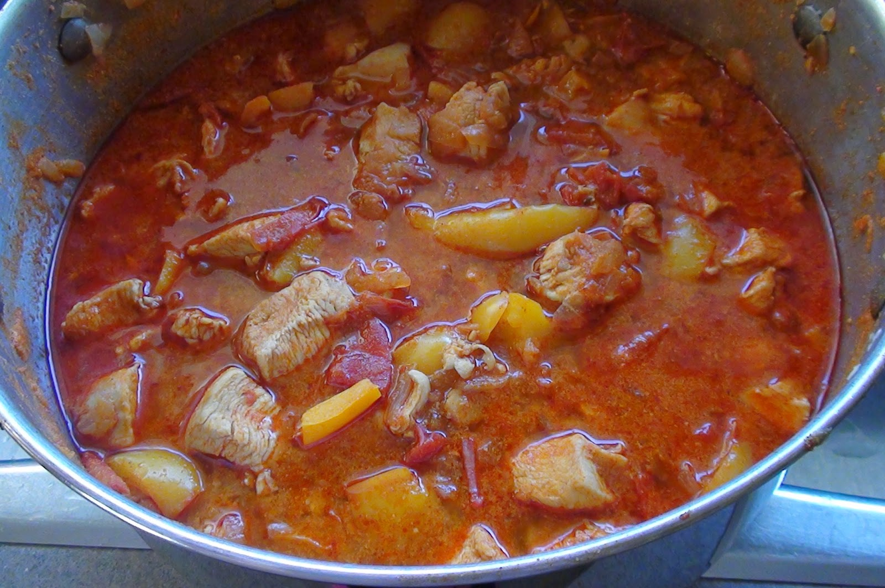

Paprikas

Description
This is a Hungarian national dish.
Ingredients
- Chicken
- Onion
- Potato
- Tomato
- Seasoning
Steps
- Dice the onion and let it simmer
- Add the chooped chiken inside the pot
- After 30-40 min of cooking add the diced potato
- When the potato is done after 20 min add the tomato souce and season it
- Enjoy!